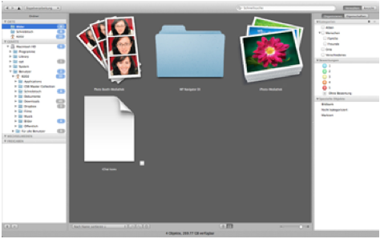
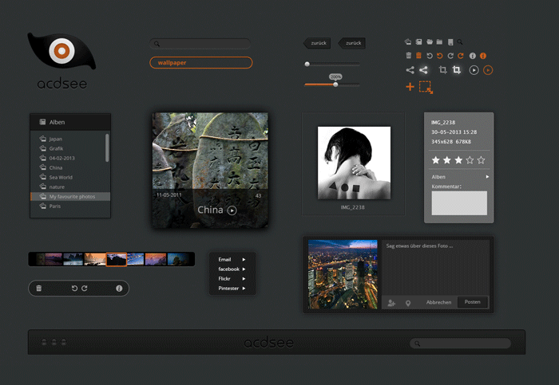
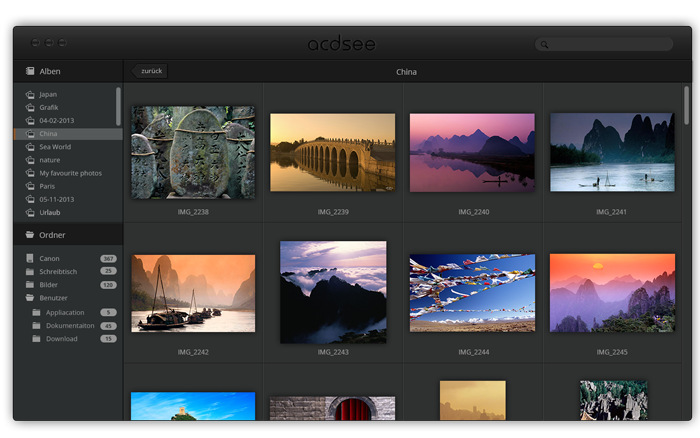

ACDSee Design
2.Semester, Gruppenarbeit


Kurze Beschreibung
ACDSee Free ist für Mac ein kostenloser Foto-Manager. Er ist für alle gängigen Grafikformate, wie BMP-, JPEG-, PNG- und TIFF-Dateien geeignet. Die Anwendergruppe liegt hier bei den eher nicht Fortgeschrittenen in der Bildbearbeitung. Bei Usern die das Programm nutzen, um beispielsweise die Urlaubsfotos ihren Freunden schnell zeigen zu können.
Problem
Ein gutes Bildbetrachter-Programm sollte dem User, bei der Vorschau, beim Bearbeiten und Verwalten Freude bereiten und unterstützen. Die Bilder sollten sich einfach bearbeiten und verwalten lassen. Aber durch ACDSee free können die Benutzer ihre Ziele nicht effektiv und effizient erreichen.
Frühere Version


Redesigen
Es wurden Funktionen wie Share, Diashow und neue Alben erstellen hinzugefügt. Das Auswahlwerkzeug wurde in Zuschneienden umbenannt. Eigenschaften hat nun die Betitelung Infos. Des Weitern wurden überflüssig und nicht genutzte Funktionen entfernt.
GUI
Ablen

Fotoübersicht
Diashow